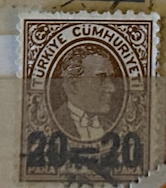
| SOURCE | TITLE| IMAGE MATCH | click to source page |
| eBay Australia | TURKEY:1936 SC#J97 MH Kemal Ataturk AA176 | eBay Australia | 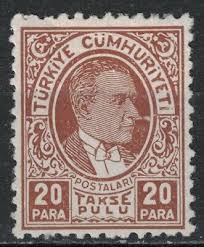 |
| Dreamstime.com | Atatürk`s 1936 Model Cabriolet Cadillac 80 Series Car. Editorial Shot in Ankara Editorial Photo - Image of government, motor: 242696991 | 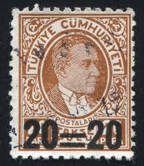 |
| HipStamp | Hatay Scott J5 | Europe - Turkey, Postage Due Stamp / HipStamp | 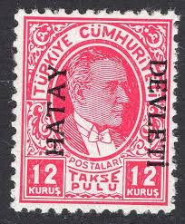 |
| eBay | TURKEY - TWO MNH STAMPS-ERROR ON OVERPRINT ON 12 k-INTERNATIONAL IZMIR FAIR-1940 | eBay | 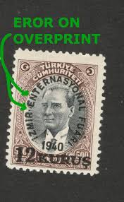 |
| eBay | TURKEY 777 - Re-militarization of the Dardanelles "Kemal Atatutk" (pb12285) | eBay | 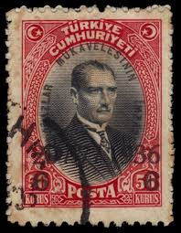 |
| JF-Stamps | Stamps | JF Stamps Danmark | 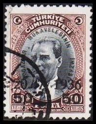 |
| Ajuntament de Barcelona | Atatürk's Turkey - Col·leccio Marull | 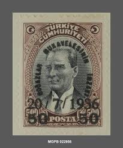 |
| Stamp Bears | What Did the Postman Bring Today? | Stamp Bears | 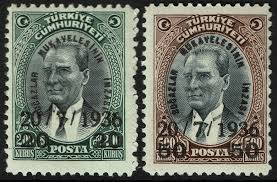 |
| HipStamp | Turkey Stamp:1981 Sc#2194- Centenary of Kemal Ataturk MNH S/S Sheet Very Fine | Europe - Turkey, General Issue Stamp / HipStamp | 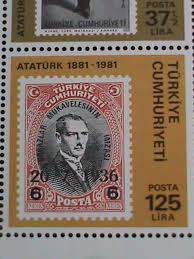 |
| lastdodo.com | 1936 Treaty of Montreux Stamp catalogue - LastDodo | 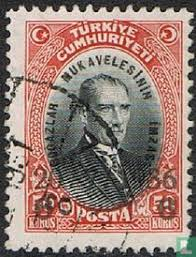 |
| Federal University of Agriculture, Abeokuta | TURKEY STAMPS | 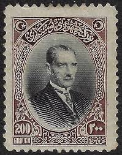 |
| HipStamp | Turkey Sc#1066 Used | Europe - Turkey, General Issue Stamp / HipStamp | 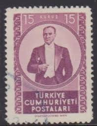 |
| HipStamp | Turkey, Sc #1066, 15k Used | Europe - Turkey, General Issue Stamp / HipStamp | 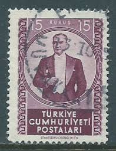 |
| eBay | Mint Hinged Turkish Stamps for sale | eBay | 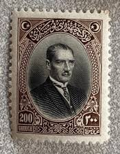 |
| eBay | 1926 Turkey Sc# 647 - 200Gr High Value - Mustafa Kamal Pasha. MH Cv$120.00 | eBay | 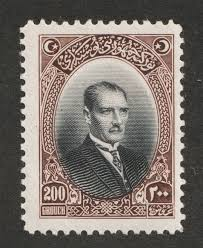 |
| Ajuntament de Barcelona | Fitxa segell - Col·leccio Marull | 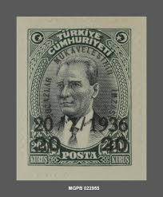 |
| lastdodo.com | Mustafa Kemal Pascha, Gen. Ataturk 100#200 (1930) - Türkiye - LastDodo | 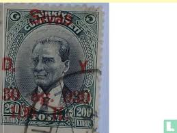 |
| Pngtree | Ataturk Memorial Day Background Images, HD Pictures and Wallpaper For Free Download | Pngtree | 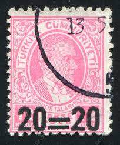 |
| eBay | Turkey Stamps for sale | eBay | 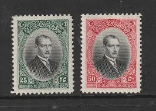 |
| Dreamstime.com | Isolated Turkish Stamp editorial stock photo. Image of envelope - 360029243 | 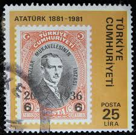 |
| eBay | 1981 Mustafa Kemal Atatürk, president,Turkey,Mi.2555,MNH | eBay | 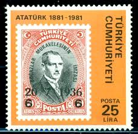 |
| Delcampe | Search in the "Unused stamps" category | Delcampe | 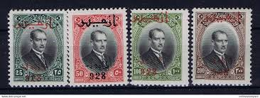 |
| Etsy | 1952 Kemal Ataturk Stamp Turkiye Cumhuriyeti Postarli, Stamp From Turkey 15 Kurus - Etsy Singapore | 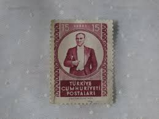 |
| JF-Stamps | Stamps | JF Stamps Danmark | 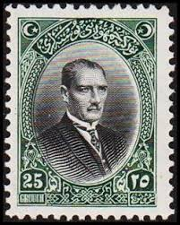 |
| Shutterstock | 3+ Thousand Hobby Jan Royalty-Free Images, Stock Photos & Pictures | Shutterstock | 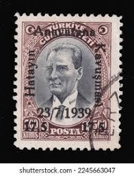 |
| Cherrystone Auctions | U.S. and Worldwide - January 14-15, 2014 - TURKEY | 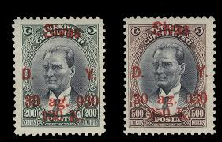 |
| Ajuntament de Barcelona | Fitxa segell - Col·leccio Marull | 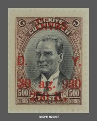 |
| eBay | Turkey Individual Stamps for sale | eBay | 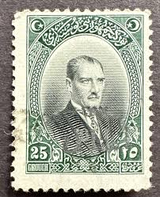 |
| eBay | Turkey, Postage Stamp, #701, 703-704 Used, 1930 | eBay | 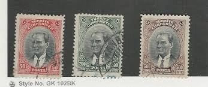 |
| eBay UK | TURKEY - TWO MNH STAMPS-ERROR ON OVERPRINT ON 12 k-INTERNATIONAL IZMIR FAIR-1940 | eBay UK | 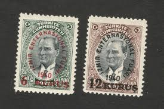 |
| Catawiki | Türkiye 1956 - Kinderhulp - Mi 201 - 211 - auction online Catawiki | 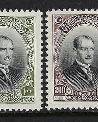 |
| buyhungarianstamps.com | 811-816 Turkey - Stamps of 1931-38 Overprinted in Black (MNH) – Eastern Europe Postage Stamps | Hungaria Stamp Exchange | 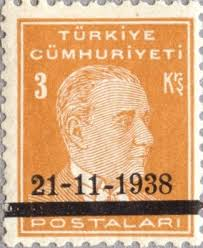 |
| eBay | Turkey stamps 1930 MI 909-912 MLH VF | eBay | 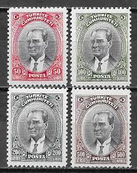 |
| LastDodo | Mustafa Kemal Atatürk [1881-1938] postzegelcatalogus - LastDodo | 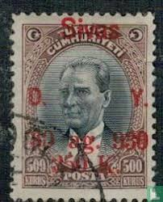 |
| Stampedia | stampedia TURKEY STAMP catalog |  |
| Shutterstock | 7+ Thousand 1 Postmark Royalty-Free Images, Stock Photos & Pictures | Shutterstock | 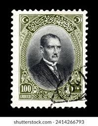 |
| Shutterstock | Francia - hacia 1958: un sello Foto de stock 2120129600 | Shutterstock | 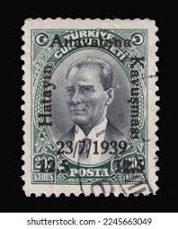 |
| Shutterstock | turkish Postage Stamp": Over 4,502 Royalty-Free Licensable Stock Photos | Shutterstock | 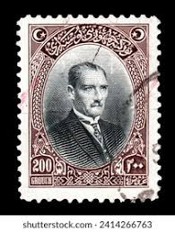 |
| eBay | TURKEY 657 MINT HINGED OG * NO FAULTS VERY FINE! VDN | eBay | 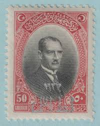 |
| lastdodo.com | Mustafa Kemal Pacha 200 (1926) - Türkiye - LastDodo | 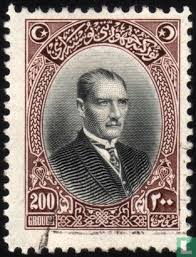 |
| HipStamp | Browse Listings in Europe > Turkey / HipStamp | 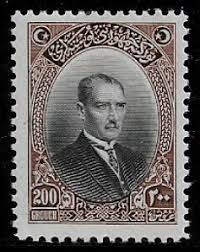 |
| eBay | Turkey 1926 mint stamp MNH** - Historical Figures | eBay | 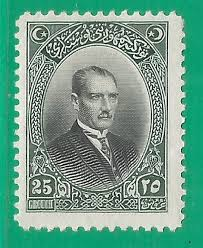 |
| eBay | Historical Events Postage Turkish Stamps for sale | eBay | 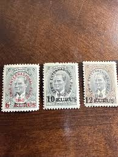 |
| Ajuntament de Barcelona | Fitxa segell - Col·leccio Marull | 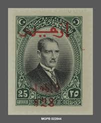 |
| eBay | Turkey Scott 647 Mint NH | eBay | 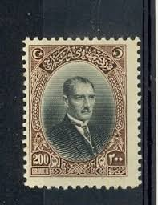 |
| eBay | Turkey Ataturk 100th Anniversary 2188-2193 2194 Full Sheet & 2 covers w/Booklet | eBay | 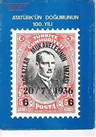 |
| eBay | Turkey Stamp 1936 - Signing of Straits Contract Yt:TR 874, 877 | eBay | 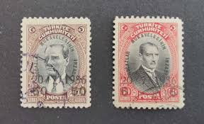 |
| eBay | Turkey 10 Lira 1938, aAU, P-128, Central Bank Cancelled | eBay | 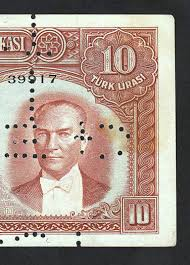 |
| eBay | Turkey 1941 Surcharged Airmail Stamps COMPLETE SET SG #1286/1288 | eBay | 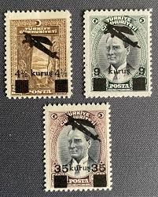 |
| eBay | Turkey Scott 647 Mint hinged VF | eBay | 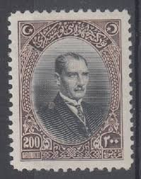 |
| Shutterstock | Turkey Circa 1989 Stamp Printed By Stock Photo 99624989 | Shutterstock | |
| GitHub Pages documentation | 🌷 | |
| lastdodo.fr | 1936 Traité de Montreux Catalogue de timbres - LastDodo | |
| eBay | s-l1200.jpg | |
| Mystic Stamp Company | 605 - 1925 1 1/2c Warren G. Harding, Yellow Brown, Perf. 10 Horizontally - Mystic Stamp Company | |
| eBay | TURKEY:1926 SC#644 Used Mustafa Kemal Pasha AJ1405 | eBay | |
| Free stamp catalogue | Stamps from Türkiye - Freestampcatalogue.com - The free online stampcatalogue with over 500.000 stamps listed. | |
| Shutterstock | 26+ Thousand Old Turkey Man Royalty-Free Images, Stock Photos & Pictures | Shutterstock | |
| HipStamp | USA 631: 1.5c Harding, pair, MH, VF | United States, General Issue Stamp / HipStamp |